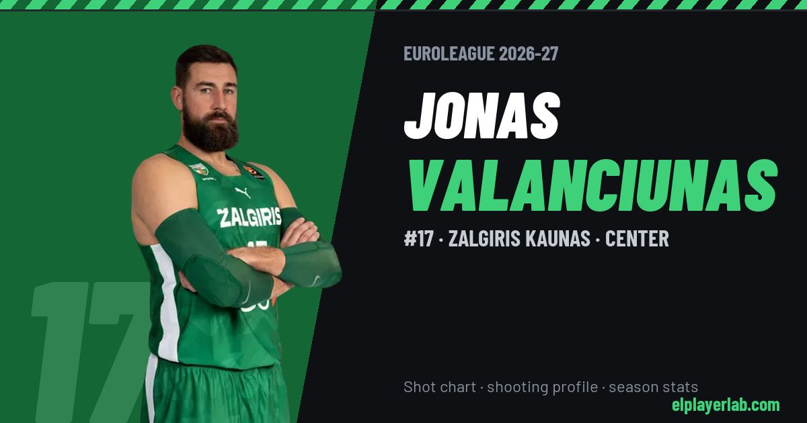

Zalgiris Kaunas · Euroleague 2026-27
Jonas Valanciunas
#17 · Center · Zalgiris Kaunas · 2026-27 · 3 games · 12.0 pts · 6.7 reb · 3.0 ast a game

- Number
- 17
- Position
- Center
- Height
- 211 cm
- Weight
- 128 kg
- Born
- 1992-05-06
- Country
- Lithuania
Career
- Zalgiris 2026-2027
- Denver Nuggets (NBA) 2025-2026
- Sacramento Kings (NBA) 2024-2025
- Washington Wizards (NBA) 2024-2025
- New Orleans Pelicans (NBA) 2021-2022
- Memphis Grizzlies (NBA) 2018-2019
- Toronto Raptors (NBA) 2012-2013
- Perlas (loan) 2009-2010
- Lietuvos rytas 2009-2012
- Perlas 2008-2009
Euroleague Player Lab: shot charts, shooting profiles and season stats for every player, rebuilt after every game.